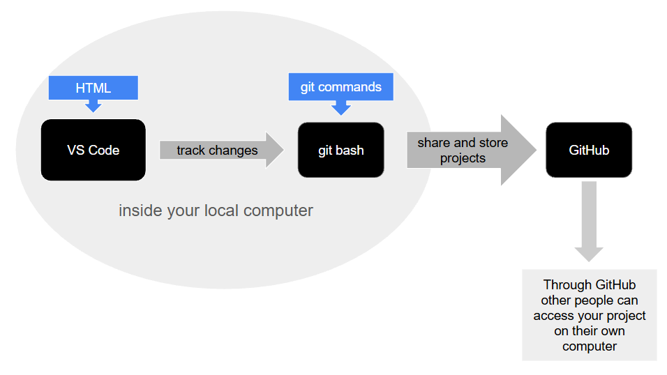

Introduction
Since the goal for this very first website is to practice coding I won't focus on the content too much, but rather make it useful to me by reviewing and rewriting some of the notes from our first lesson.
I am completely new to web development. I have never done any coding before, so I have learned a lot of new things in a very short amount of time. Therefore it feels a bit fitting to write down some of the first things that I have learned. This will mostly contain definitions and explanations of basic terms that I either got or came up with in order to make it easier for me to understand these concepts.
What is HTML?
HTML means Hyper Text Markup Language. Hyper text is written content that is linked beyond normal limits. For example, it's what lets you click on a link and be taken to a different page, instead of being one linear or fixed document. Markup language is a language that adds labels or structure (by for example saying what's a heading or a paragraph) to content without containing logic or calculations in the way programming languages do.
HTML syntax is kind of like the grammar of HTML. It is a set of rules for structuring code correctly. By that definition it has a similar role as grammar does in spoken languages. It provides rules and structure for expressing ourselves properly.
Unlike regular grammar, HTML syntax consists of tags. Tags come in pairs or singles. A tag that comes in a pair has an opening and closing tag, while single tags only have an opening tag.
"Browsers don't display HTML"
Think of HTML like a list of ingredients. A browser acts like an oven. When you put the ingredients in an oven you bake the cake. In this instance, the cake is the equivalent of a website. It is how the codes and tags actually look when rendered.
VS code stands for Visual Studio Code. It's a program used for writing HTML code in.
About git & GitHub
Git is a tool that saves checkpoints of your project over time which create a history of your project that you can look back through over time.
GitHub acts similarly to cloud services like Google Drive or OneDrive. The difference is that it's made specifically for git projects and unlike cloud servies it stores your project's full history and not just the current file. It is also a good platform for sharing and collaborating on projects.
Git bash is a specific program that you use to type git commands on Windows.
A repository is a storage location for a project's files. It also contains the complete history of changes made to those files over time.
Two common git commands are git push and git pull. You use these commands when transporting your changes between your computer and GitHub. Using git push sends your changes to GitHub while git pull brings changes made by others to your computer.
Summary of the workflow
When working with web development you can use the markup language HTML. A program where you can write HTML code in is VS code. You work on the code on your computer locally. But to store your projects and share them with others there is a platform called GitHub. You can use git bash to track the changes you make in your project. Inside git bash you use git commands such as git push and git pull. These are used to push out your saved changes in VS code to GitHub where other people can pull those changes to their own computers.
